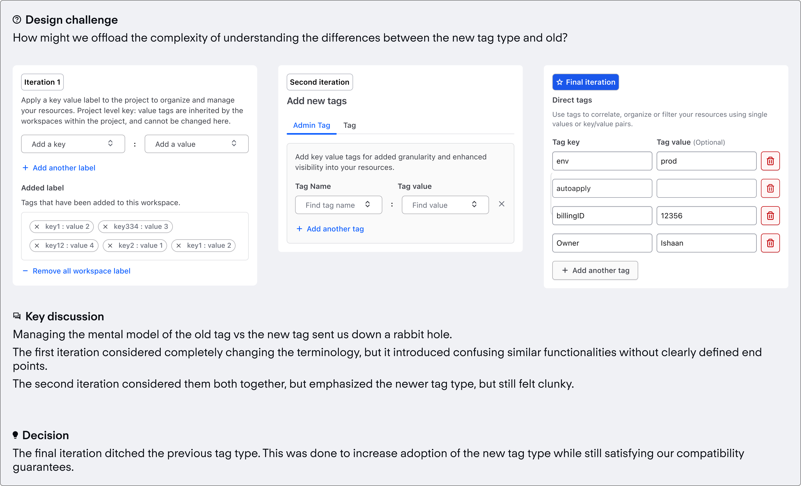

HCP Terraform
Key Value Tags
Context
HashiCorp is a unicorn DevOps company that specializes in world class infrastructure products. They are the industry standard in Infrastructure as Code (IaC), and have produced many key products such as Terraform, Vault and Consul.
In 2023 I rejoined HashiCorp as a product designer focusing on Product Led Growth and the CLI experience on Terraform. Terraform is the industry standard tool to provision cloud-agnostic infrastructure as code. This allows you to use a declarative language to manage dynamic loads, and spin up new servers rapidly.
Overview
When: Q2 2024
Team: Product Designer (Me), Product Manager, Eng Lead, EM
Tools: Figma, Snowflake, Commandbar
Solution preview
Background
Terraform Cloud has the concept of “Tags” within the product, and also as an object type within the cloud block in a terraform configuration file. Tags were introduced to allow users to quickly organize, correlate and filter the core resource of Terraform Cloud, Workspaces.

So what's wrong?
The issue is that tags in their current inception were useful, but limited in how customers think about and use tags. A single value string when applied to an object is useful for filtering usecases, but doesn’t necessarily map to the entire spectrum of user types in Terraform Cloud. To illustrate this, lets consider two personas:
Core personas
Appo the app developer
This individual finds value in the current state of tags, using it mainly to filter
Plata the app Platform Engineer
The platform engineer, or the Terraform expert of their organization, likely won’t find value in the current implementation of tags
To understand why, lets map outs the platform engineer journeys to illustrate where the current implementation of tags is lacking


So what we can tell is that key value tags are a major type of tag that our customers want to use, but can't currently. Which makes sense since the other platforms that our core users are mainly in, Cloud Service Providers, also have this concept.
Key Learning
Customers desire the ability to tag their cloud resource with key value pairs.
So how are they currently used?
When you look at tags, you can start to categorize them into 2 types.
One type of tag is largely arbitrary and is added by the end user (the app developer that I just mentioned), while the other type of tag is more administrative, likely by the second persona mentioned, the platform engineer!
The more administrative type of tags also come with a key characteristic, they likely feature a key and a value, which allows you to organize resources by value based indicators. There was only one problem… Terraform Cloud didn’t support this natively.
Users started to hack their way around it, and add delimiters like “:” and “=” within a single value tag to try to do this, and the data showed that 36% of all tags had some kind of janky delimiter in there, proving need for this in the application.

Designing a better tags
To begin we had to ascertain exactly what the user need is here. We knew that generally there was demand for this type of tag, and that users were hacking their way around the current implementation, but we didn’t know exactly how users were setting up tags in their organization.
To approach this, my PM and I engaged with 4 different customers who expressed interest in this sort of thing. We focused on specifically the platform engineer persona that I mentioned before, as they were the persona type that was the least served by the current model.

This user research allowed us to create an initial problem statement -
Problem statement
Tags as a concept is ineffective in allowing customers to perform more administrative tasks, such as managing billing, audit, and RBAC. The current implementation is too permissive, meaning anyone can add or remove tags, and a tag itself cannot be added at a project level. This causes the customer to have to more manual busy work on their end to maintain a system of record of internal metadata to keep up.
Goal Setting
Increase Tag Usage on Resources
General Goal
Enable consumption of contract entitlement
Long tail Goal
-75% Workspace Tag Usage
Migration Goal
Solution: Key design problems
Inheritence with edge cases
One of the key issues to solve was how to convey inheritence, which is the concept that lower level resources are able to inherit higher level metadata through tags. This concept was already easily understood in the cloud infrastructure world, but birthed a lot of complexity with understanding all the possible edge cases, and where there might need to be design work to understand it.

Filtering by tags
When a tag is created and applied to a resource, one of the core user journeys that a user will accomplish is filtering. A key example is taking a large list of resources like all the workspaces in an organization, and filtering it down to the subset that includes the "env:prod" tag. When considering the technical implementation, the metaphor that matched the most was akin to a query, so the design reflected that. A user would search for a tag and then a list of resources that match that tag would return.

Binding tags
We needed to undertstand how both the app developer and platform persona would use the tag binding workflow to determine how to present it.

Mental model
One of the big hurdles was managing how a user would perceive the new key value tag vs the existing workspace tag, and how that influences adoption.
Complete flow
The prototype for the full tag flow is below. This flow connects both the Platform Engineer (Plata) and the App Developer (Appo). In mature organizations these personas are separate, and the platform engineers predefine tags for the app developers to use. I talk through some of the example use cases and why you need to do things like create reserved keys. **By default the sound is off so you aren't blasted by my voice :)
Customer reactions
Customer sentiment was overwhelmingly positive for this feature. Many customers had been asking for this for a long time, and could finally stop having to create bespoke solutions or hack their way around managing cloud resources. Cost attribution is one of those things that can actually negatively influence engagement from a contract perspective because customers are fearful about going over their contracted entitlement quota. As a result of enabling more accurate cost attribution with key value tags, customers felt more confident about using the amount that they bought.
Impact
12 percent of all active organizations
using new tag type
322 customers
Using project tags
Workspace tag creation down 87%
Through design decisions
Additionally, design patterns have been adopted by other HashiCorp platform design team, and used in 4 new products.
Conclusion
While adding something like tags might seem trivial or tablestakes, it was actually quite a large effort that took many months. A large part of this was implementation discussions at a larger platform level, in which many teams engaged on discussions for how tags should work not only for Terraform, but also for other HashiCorp Cloud products. That delayed our timelines and restricted our scope, but gave us a solution that was stronger.
Next steps
Automatic tag migration from old tag -> new tag